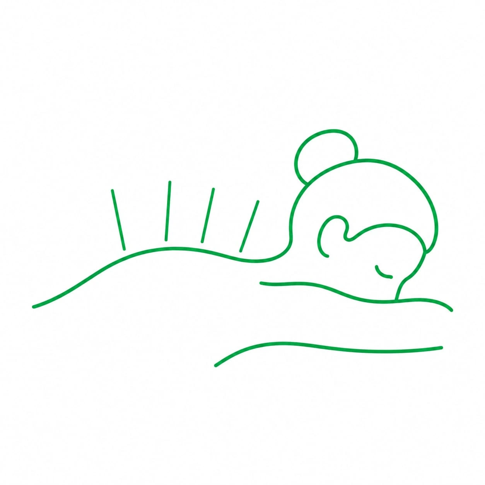

Suche igłowanie Gdańsk
Suche igłowanie, nazywane również igłoterapią, to metoda, która – jak sama nazwa wskazuje – wykorzystuje sterylne, cienkie igły wprowadzane w wybrane punkty na ciele. Technika ta umożliwia wyeliminowanie napięcia mięśni, bólów napięciowych i bólów stawów.

Co ważne, nie należy mylić jej z akupunkturą, mimo że w obu przypadkach wykorzystuje się ten sam rodzaj igieł. W naszym Ośrodku Terapii FiLO suche igłowanie wykonywane jest przez wykwalifikowanych specjalistów, którzy zawsze dbają o bezpieczeństwo pacjenta i jego komfort.
Suche igłowanie Gdańsk – co to za metoda?
Suche igłowanie to technika, w której za pomocą specjalistycznych igieł oddziałuje się na punkty spustowe znajdujące się na ciele. Punkty te najczęściej zlokalizowane są w obrębie pasm mięśniowo-powięziowych, które charakteryzują się dużą wrażliwością. Pojawiają się także w innych strukturach: tkance tłuszczowej, torebkach stawowych i więzadłach. Dokładne przyczyny powstawania punktów spustowych nie zostały jednoznacznie określone. Ich występowanie może mieć jednak związek m.in. z wiekiem, przebytymi urazami i kontuzjami, zmianami zwyrodnieniowymi w obrębie stawów oraz nieprawidłową postawą ciała.
Do suchego igłowania w Gdańsku wykorzystuje się igły, które służą wyłącznie do mechanicznego oddziaływania na wybrane tkanki. Nie podaje się za ich pomocą żadnych substancji, stąd właśnie określenie „suche” igłowanie.
Suche igłowanie Gdańsk – jakie są wskazania?
Suche igłowanie w Gdańsku znajduje zastosowanie przede wszystkim w przypadku dolegliwości bólowych, nadmiernego napięcia mięśniowego, zaburzeń w obrębie tkanek mięśniowo-powięziowych oraz ograniczonej ruchomości. Metoda ta może być wykorzystywana również przy dolegliwościach związanych ze ścięgnami, bólu kręgosłupa i rwie kulszowej. Wśród wskazań znajdują się także problemy takie jak łokieć tenisisty, zespół bolesnego barku, zespół cieśni nadgarstka, kolano biegacza, napięciowe bóle głowy czy dolegliwości w okolicy pośladków i podeszwowej części stopy. Ostateczna decyzja o zastosowaniu tej metody powinna być poprzedzona oceną stanu pacjenta oraz miejsc występowania dolegliwości.
Suche igłowanie w Gdańsku – jak wygląda?
Suche igłowanie w Gdańsku rozpoczyna się od przeprowadzenia wywiadu z pacjentem oraz dokładnej oceny miejsca, w którym występują dolegliwości. Specjalista zbiera informacje dotyczące charakteru bólu, jego nasilenia i innych objawów, a także ustala, czy pacjent miał już wcześniej wykonywane tego rodzaju zabiegi.
Następnie fizjoterapeuta palpacyjnie lokalizuje punkty spustowe oraz przygotowuje skórę w ich okolicy. W wybrane miejsca wprowadzane są cienkie igły, które oddziałują na tkanki. Specjalista delikatnie nimi porusza w celu rozbicia punktu spustowego i wyeliminowania dolegliwości, z którymi zgłosił się pacjent.
Suche igłowanie – czym różni się od akupunktury?
Choć w obu metodach wykorzystuje się cienkie igły, ich założenia oraz sposób działania są zupełnie inne. Akupunktura wywodzi się z tradycyjnej medycyny chińskiej i opiera się na koncepcji meridianów oraz przepływu energii w organizmie. Igły umieszcza się w określonych punktach, aby wpływać na jej przepływ. Suche igłowanie w Gdańsku bazuje natomiast na wiedzy z zakresu anatomii i fizjologii. Igły wprowadzane są bezpośrednio w zidentyfikowane struktury, w celu wywołania określonej reakcji fizjologicznej.
Suche igłowanie w Gdańsku – dlaczego nasz Ośrodek Terapii FiLO?
Wybierając nasz Ośrodek Terapii FiLO, można liczyć na profesjonalne podejście oraz komfortowe warunki podczas całego zabiegu. Nasi specjaliści są bardzo dobrze wyszkoleni, mają szeroką wiedzę i wysokie umiejętności praktyczne, a swoją pracę wykonują z zaangażowaniem i pasją. Łatwo nawiązują relacje z pacjentami, dbając o otwartą komunikację oraz przyjazną atmosferę podczas igłoterapii. Dysponujemy nowoczesnymi gabinetami, w których szczególną uwagę przykładamy do higieny i sterylności. Zależy nam na tym, aby każdy pacjent czuł się bezpiecznie i swobodnie, dlatego przed zabiegiem wyjaśniamy jego przebieg, odpowiadamy na pytania i pozostajemy otwarci na wszelkie uwagi oraz odczucia pacjenta.
Potrzebujesz pomocy?
Nie wiesz, która metoda będzie odpowiednia dla Ciebie lub Twojego dziecka? Skonsultuj się z naszym zespołem i dobierz indywidualny plan terapii.
Umów wizytęObszary Metod
Terapie w Gdańsku
Specjalista ds. Fizjoterapii
mgr Olga Długozima
Fizjoterapia DorosłychNajczęściej zadawane pytania
Czy suche igłowanie w Gdańsku boli i jak można się czuć po
zabiegu?
+
Igły są bardzo cienkie, więc samo wkłucie zwykle jest ledwo wyczuwalne. Gdy igła trafi w punkt spustowy, mięsień może się krótko, odruchowo skurczyć. Bywa to nieprzyjemne, ale trwa chwilę i jest oznaką, że terapeuta trafił we właściwe miejsce. Przez dzień albo dwa po zabiegu mięsień może boleć podobnie jak po treningu, a w miejscu wkłucia może się pojawić mały siniak. To naturalna reakcja tkanek. W dniu zabiegu, który obejmuje suche igłowanie w Gdańsku, lepiej nie planować ciężkiego treningu leczonej partii mięśni.
Kto nie powinien korzystać z suchego igłowania w Gdańsku?
+
Przed zabiegiem fizjoterapeuta pyta o stan zdrowia, bo w niektórych sytuacjach suche igłowanie jest niewskazane albo wymaga szczególnej ostrożności. Dotyczy to między innymi: silnego lęku przed igłami, zaburzeń krzepnięcia krwi i przyjmowania leków przeciwzakrzepowych, ciąży, infekcji, stanów zapalnych lub zmian skórnych w miejscu zabiegu, choroby nowotworowej w leczonym obszarze, obrzęku limfatycznego, obniżonej odporności oraz uczulenia na metal. Dlatego przed suchym igłowaniem w Gdańsku warto przygotować listę przyjmowanych leków i powiedzieć o przewlekłych chorobach.
Ile zabiegów obejmuje suche igłowanie w Gdańsku i czy łączy
się je z innymi metodami?
+
Część pacjentów czuje mniejsze napięcie już po pierwszym zabiegu, ale przy dolegliwościach trwających dłużej zwykle potrzeba kilku spotkań. Odstępy między nimi dobiera fizjoterapeuta. Suche igłowanie w Gdańsku najlepiej działa jako część szerszej terapii. Samo rozluźnienie punktu spustowego nie usuwa przyczyny przeciążenia, dlatego łączymy je z terapią manualną i ćwiczeniami, które pomagają utrzymać efekt. Zabieg wykonuje mgr Olga Długozima.